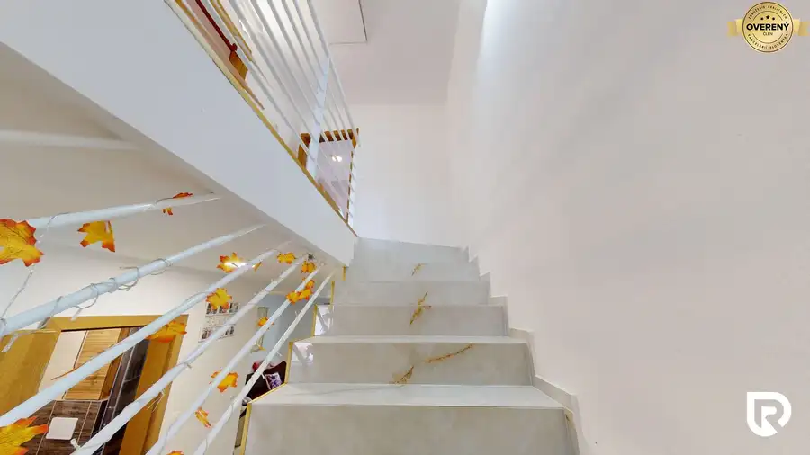
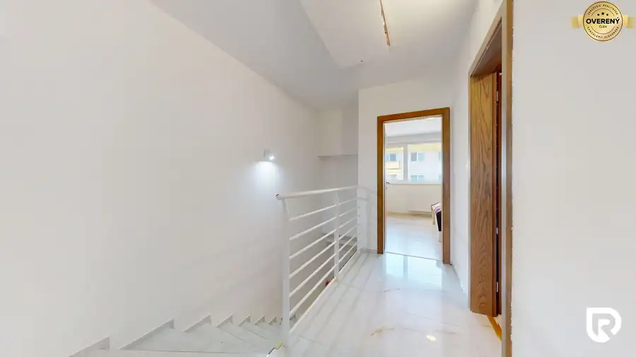
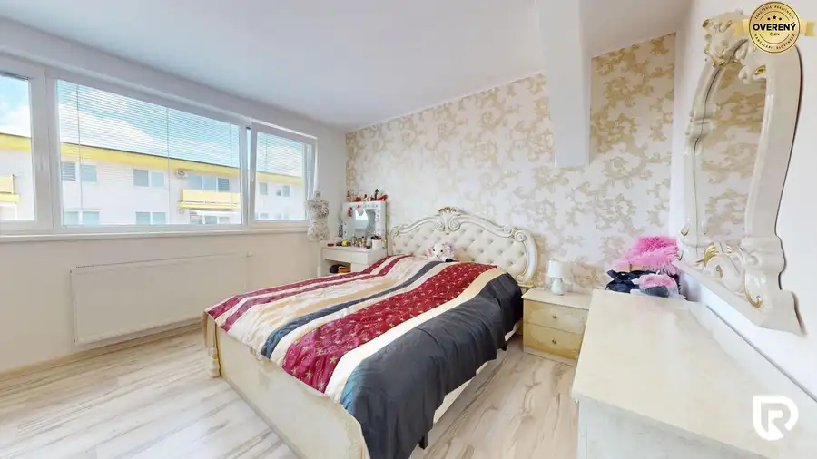
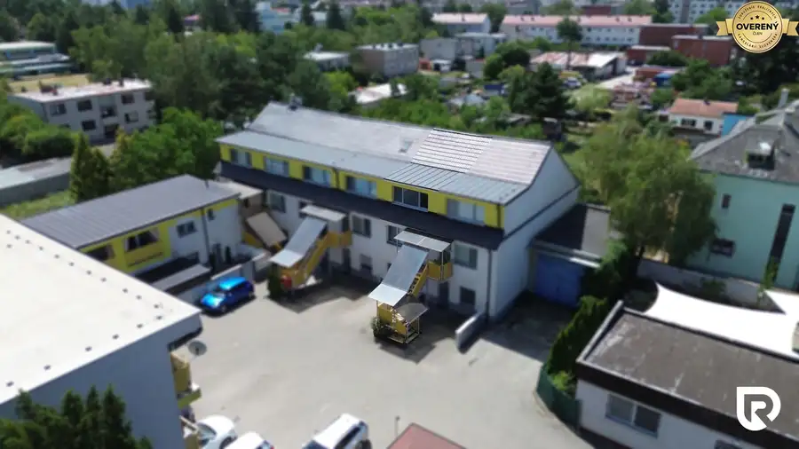
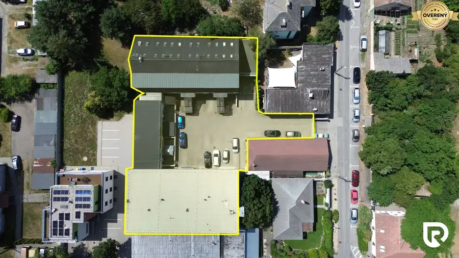

3-izbový byt 119m2 + loggia 6m2 | Pribinova
Malacky





- Dispozícia3-izbový
- Plocha119 m²
- Poschodie2. z 2
- Stavúplne prerobený
- Vlastníctvoosobné
O nehnuteľnosti
RADOReality
Vám ponúka na predaj
nadštandardne priestranný 3-izbový mezonetový byt
s úžitkovou plochou až 119 m², loggiou o výmere 6 m², vlastným garážovým státím a pivnicou s výmerou 10 m² vo vyhľadávanej lokalite na Pribinovej ulici v Malackách. Táto nehnuteľnosť predstavuje ideálne bývanie pre rodinu alebo každého, kto hľadá priestor, komfort a moderné bývanie bez ďalších investícií.
Dominantou nehnuteľnosti
je plnohodnotne zobytnené podkrovie, ktoré vzniklo prestavbou pôvodného povalového priestoru. Prístup je riešený rebríkom, samotná miestnosť je však kompletne pripravená na každodenné využívanie ako ďalšia obytná izba. Môže slúžiť ako hlavná spálňa, detská izba, pracovňa, herňa alebo oddychová zóna podľa potrieb nového majiteľa. Vďaka tomu byt ponúka výrazne viac priestoru, než je pri bežných 3-izbových bytoch zvykom.
MODERNIZÁCIE BYTU:
Byt prešiel kompletnou rekonštrukciou, počas ktorej boli zrealizované nové stierky, kompletné maľovanie, modernizácia interiéru a zároveň bola pôvodná práčovňa na prízemií prerobená na plnohodnotnú kúpeľňu. Veľkou investíciou bolo aj zobytnenie podkrovného priestoru, čím vznikla ďalšia plnohodnotná obytná miestnosť. Celá nehnuteľnosť pôsobí veľmi čistým, moderným a udržiavaným dojmom bez potreby akýchkoľvek ďalších investícií.
Ďalším benefitom je, že sa byt predáva kompletne zariadený, takže novému majiteľovi stačí priniesť si osobné veci a okamžite bývať.
DISPOZÍCIA:
Pre najlepšie pochopenie dispozície odporúčame pozrieť
virtuálnu obhliadku
: https://my.matterport.com/show/?m=o5QSwwgwa1R
TECHNICKÉ INFORMÁCIE:
Byt disponuje celkovou úžitkovou plochou 119 m², ktorú dopĺňa loggia s výmerou 6 m². K nehnuteľnosti prislúcha aj pivnica s výmerou 10 m², ktorá sa nachádza v garážovom dome. Bytový dom bol skolaudovaný v roku 2017 a samotný byt prešiel kompletnou rekonštrukciou. V rámci nej boli zrealizované nové stierky, kompletné maľovanie, vznikla nová kúpeľňa z pôvodnej práčovne a povalový priestor bol prerobený na plnohodnotnú obytnú miestnosť. O komfort počas celého roka sa stará vlastný plynový kotol s vykurovaním prostredníctvom radiátorov. V byte je zároveň pripravená predpríprava na klimatizáciu a nehnuteľnosť sa predáva kompletne zariadená.
MESAČNÉ NÁKLADY:
Mesačné prevádzkové náklady sú veľmi priaznivé. Spotreba plynu predstavuje približne 50€ mesačne, elektrická energia približne 50€ mesačne a poplatok správcovi bytového domu je 67€ mesačne pri štvorčlennej domácnosti. Súčasní majitelia zároveň pravidelne evidujú preplatky z ročného vyúčtovania, čo potvrdzuje efektívnu prevádzku celej nehnuteľnosti.
PARKOVANIE A PIVNICA:
Veľkým benefitom je vlastné vyhradené parkovacie miesto v garážovom dome, ktorý sa nachádza priamo oproti bytovému domu v rámci uzatvoreného rezidenčného areálu. Súčasťou predaja je aj priestranná pivnica s výmerou 10 m², ktorá poskytuje dostatok priestoru na uskladnenie bicyklov, športového vybavenia či sezónnych vecí.
LOKALITA:
Byt sa nachádza na Pribinovej ulici v Malackách, vo vyhľadávanom rezidenčnom komplexe skolaudovanom v roku 2017. Celý areál vrátane bytového domu a samostatného garážového domu je uzatvorený, čo budúcim majiteľom prináša vyššiu úroveň bezpečnosti, súkromia a pokojné bývanie. Pribinova ulica patrí medzi obľúbené časti Malaciek, ktoré ponúkajú ideálnu kombináciu pokojného bývania a kompletnej občianskej vybavenosti. V bezprostrednom okolí nájdete materské a základné školy, potraviny, detské ihriská, športoviská, zdravotné stredisko, reštaurácie, kaviarne aj zastávky MHD. Centrum mesta je dostupné v priebehu niekoľkých minút a výhodou je aj rýchle napojenie na diaľnicu D2, vďaka čomu sa do Bratislavy dostanete približne za 30 minút.
V prípade záujmu o detailnejšie informácie alebo obhliadku pozemku ma neváhajte kontaktovať:
Rastislav Horňák
RADO Reality Group
Tel.:
E-mail:
Uvedená cena je konečná, pokiaľ sa zmluvné strany nedohodnú inak a nenavyšuje sa o odmenu sprostredkovateľa, v cene je zahrnuté právne poradenstvo, vyhotovenie kúpnych zmlúv, hypotekárne poradenstvo a uhradenie správneho poplatku za návrh na vklad do katastra nehnuteľností.
RADO Reality Group je ocenená Realitnou úniou ako najlepšia realitná kancelária na Slovensku za rok 2022. Okrem iného sme držiteľmi ďalších 4 prestížnych ocenení.
Parametre
- Celková rozloha
- 125 m²
- Úžitková plocha
- 119 m²
- Poschodie
- 2/posledné poschodie
- Počet poschodí
- 2
- Počet izieb
- 3
- Vlastníctvo
- osobné
- Stav
- úplne prerobený
- Status
- aktívne
- Odvoz odpadu
- áno - separovaný
- Plyn
- áno
- Internet
- wifi
- Kúpeľňa
- áno
- Vykurovanie
- vlastné - plyn
- Lódžia
- áno - 1
- Pivnica
- áno
- Garáž
- áno - 1 auto
- Výťah
- nie
- Parkovanie
- vlastné vyhradené
- Postavené z
- Zmiešané
- Zariadenie
- zariadený
- Zateplený objekt
- áno
- Klimatizácia
- predpríprava
- Káblová televízia
- áno
- Energetický certifikát
- áno
- Bezbariérový prístup
- nie
- Okná
- plastové
- Orientácia
- sever/juh
- Novostavba
- áno
- Dátum zverejnenia
- 2026-09-08
Kde to je
Mohlo by Vás zaujímať
 BytNové
244 900 €3-izbový byt 80m2 | I. Bukovčana - DNV
Devínska Nová Ves, Bratislava
3-izbový77 m²1. podlažie
BytNové
244 900 €3-izbový byt 80m2 | I. Bukovčana - DNV
Devínska Nová Ves, Bratislava
3-izbový77 m²1. podlažie
 Rodinné domyNové
721 400 €4-izbový dom 390m2 + pozemok 1000m2 | Limbach
Limbach
4-izbový390 m²
Rodinné domyNové
721 400 €4-izbový dom 390m2 + pozemok 1000m2 | Limbach
Limbach
4-izbový390 m²
 Rodinné domyNové
359 100 €4-izbový rodinný dom 108m2 + pozemok 471m2 | Senec
Senec
4-izbový108 m²
Rodinné domyNové
359 100 €4-izbový rodinný dom 108m2 + pozemok 471m2 | Senec
Senec
4-izbový108 m²